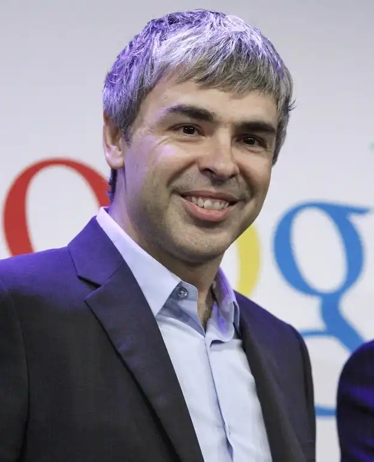
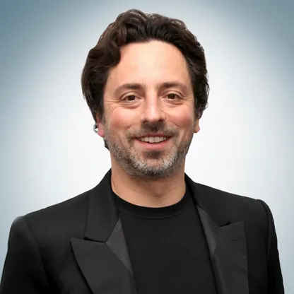
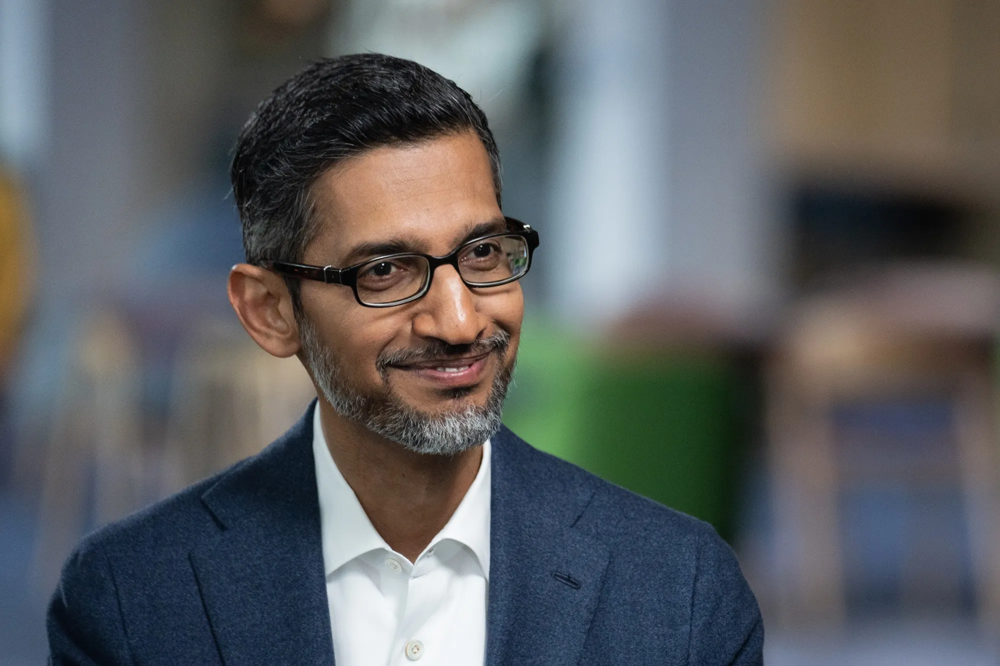
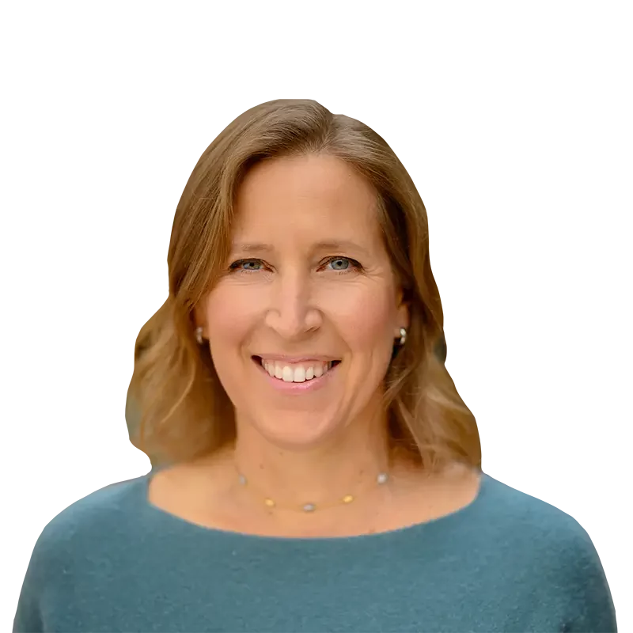

Larry Page waa mid ka mid ah aasaasayaashii Google. Wuxuu ku dhashay Michigan, USA sanadkii 1973. Wuxuu kaalin weyn ka qaatay dhismaha iyo koboca Google. Larry waxaa lagu yaqaanaa hal-abuur iyo fikir cusub oo horseeday in Google noqoto shirkad caalami ah.

Sergey Brin waa aasaasaha labaad ee Google. Wuxuu ku dhashay Moscow, Russia sanadkii 1973. Wuxuu Larry Page kula kulmay Jaamacadda Stanford, halkaas oo ay ka bilaabeen mashruuca Google. Sergey wuxuu door weyn ku lahaa horumarinta teknoolajiyadda shirkadda.

Sundar Pichai waa CEO-ga Google. Wuxuu ku dhashay India sanadkii 1972. Wuxuu ku biiray Google sanadkii 2004 waxaana lagu xasuustaa horumarinta Google Chrome. Maanta wuxuu hoggaamiyaa dhammaan howlaha Google iyo Alphabet.

Susan Wojcicki waxay ahayd mid ka mid ah shaqaalihii ugu horreeyay ee Google. Waxay muddo dheer ka shaqeysay shirkadda waxayna sidoo kale ahayd CEO-ga YouTube. Waxay caan ku tahay horumarinta xayeysiiska internetka iyo kobcinta YouTube.